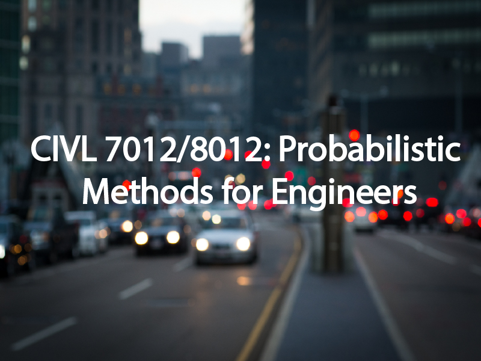

Course Archive 7012
Archived course materials and instructional resources.
Teaching
Teaching emphasizes analytical thinking, policy relevance, and clear links between classroom concepts and real transportation challenges faced by agencies, industry, and communities.
Teaching Philosophy
Courses are designed to move from conceptual understanding to practical application. The teaching approach integrates modeling, data interpretation, systems thinking, and policy context so students can connect engineering methods to real-world transportation decisions.
Courses Taught

Archived course materials and instructional resources.
Instructional content focused on civil and transportation engineering topics.
Archived materials from a Fall 2014 offering.
Spring 2017 course site with materials and supporting documents.
Archived course content linked to graduate transportation instruction.
Spring 2014 course site and related teaching materials.
Course Materials
Legacy course material visual retained from the original site.
Legacy instructional record from prior teaching activity.
Preserved teaching archive imagery from the earlier site.